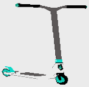

| 
SCOOTPLOITATION: narrativa urbana tipo culturtainment Scootploitation™ (o Scoot'ploitation™) es la primera occurencia de un nuevo concepto : la deambulación virtual basada en la realidad, algo que se acerca al juego serio, la gamificación de un paseo real. Primero lo primero, explicando el nombre de este concepto : Scootploitation ! La palabra Scootploitation es un neologismo de nuestro invento. Esta compuesta de dos palabras inglesas : Scooter y Exploitation. Scooter es la palabra inglesa por monopatín (o patinete segun la región), el vehículo bien conocido, compuesto de una tabla, dos ruedas y un manillar, de marcas tales como Oxelo, Micro, Xootr etc... Exploitation es la palabra inglesa por explotación. Utilisamos este termino en el sentido que tiene en la categoría Cine de Explotación, en la cual se agrupan las películas que intentan triunfar mediante la explotación de tendencias actuales, géneros de nicho o contenido escabroso. A veces atraen atención crítica y seguidores de culto (dixit Wikipedia). El monopatín nos gusta como modo de deambular, es un género de nicho y como muchas culturas underground se volvió una tendencia actual, mainstream. Al igual que los juegos videos, la computación etc... No negamos ser seducidos por esas tendencias, las hemos mezclado en ese concepto y sitio web : Scootploitation !
Leer otra vez
* * * * * * Los Fundadores * * * * * *
Para descubrir más, entrar en el concepto, sumergirse en la acción :
+ Ampliar Letras | - Disminuir Letras
|